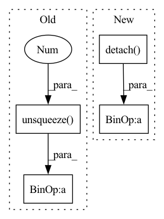

Pattern ID :20974

Before Change
x_std[i, :] = x[i, :, :].std(dim=1)
// make sure x_std is not zero
x_std += self.div_guard
return (x - x_mean.unsqueeze(2)) / x_std.unsqueeze(2)
class DitherAudio(nn.Module):
def __init__(self, dither=1e-5):
After Change
def forward(self, x: torch.Tensor) -> torch.Tensor:
x_mean = x.mean(dim=2, keepdim=True).detach()
x_std = x.std(dim=2, keepdim=True).detach()
// make sure x_std is not zero
x_std += self.div_guard
return (x - x_mean) / x_std
class DitherAudio(nn.Module):
In pattern: SUPERPATTERN
Frequency: 3
Non-data size: 4
Instances
Fragment ID: 67545636
Project Name: scart97/thunder-speech
Commit Name: 868b3d50886a7e0d85f988328f18e7c60aa81bab
Time: 2021-02-24
Author: scart.lucas@gmail.com
File Name: src/thunder/quartznet/preprocess.py
M Class Name: FeatureBatchNormalizer
N Class Name: FeatureBatchNormalizer
M Method Name: forward(2)
N Method Name: forward(2)
M Parent Class: nn.Module
N Parent Class: nn.Module
M File Name: src/thunder/quartznet/preprocess.py
N File Name: src/thunder/quartznet/preprocess.py
M Start Line: 54
M End Line: 68
N Start Line: 54
N End Line: 59
'>
Before Change
gap = self.global_avg_pool(x)
gap_logit = self.global_avg_pool_fc(gap.view(x.size(0), -1))
gap_weight = self.global_avg_pool_fc.linear.weight.data.clone()
gap = x * gap_weight.unsqueeze(2).unsqueeze(3)
gmp = self.global_max_pool(x)
gmp_logit = self.global_max_pool_fc(gmp.view(x.size(0), -1))
gmp_weight = self.global_max_pool_fc.linear.weight.data.clone()
After Change
gmp = self.maxpool(x)
gmp_logit = self.maxpool_fc(gmp.flatten(1))
gmp_weight = self.maxpool_fc.weight.detach().clone()
gmp = x * gmp_weight[:, :, None, None]
cam_logit = torch.cat([gap_logit, gmp_logit], dim=1)
x = torch.cat([gap, gmp], dim=1)
'>
Fragment ID: 67545634
Project Name: stomoya/animeface
Commit Name: a90fefdcfa84ce38987194a1ebd71b59eee30e0b
Time: 2022-03-23
Author: stomoya0110@gmail.com
File Name: implementations/UGATIT/model.py
M Class Name: CAM
N Class Name: CAM
M Method Name: forward(2)
N Method Name: forward(2)
M Parent Class: nn.Module
N Parent Class: nn.Module
M File Name: implementations/UGATIT/model.py
N File Name: implementations/UGATIT/model.py
M Start Line: 112
M End Line: 123
N Start Line: 42
N End Line: 58
'>
Before Change
network_prediction = self.q_network.forward(batch_inputs).view(self.batch_size, self.agents, self.number_actions)
// Bellman equation
batch_labels_tensor = batch_labels + (discount_factor * max_target_net)
td_errors = (network_prediction - batch_labels_tensor.unsqueeze(-1)).detach()
index = torch.tensor(transitions[1], dtype=torch.long).unsqueeze(-1)
y_pred = (torch.gather(network_prediction, -1, index)).squeeze()
After Change
max_target_net = y.max(-1)[0]
network_prediction = self.q_network.forward(curr_state).view(self.batch_size, self.agents, self.number_actions)
// Bellman equation
batch_labels_tensor = rewards + (discount_factor * max_target_net.detach())
//td_errors = (network_prediction - batch_labels_tensor.unsqueeze(-1)).detach() // TODO td error needed for exp replay
'>
Fragment ID: 67545631
Project Name: gml16/rl-medical
Commit Name: 8a44d0b4c41689fa1ec3c16b470f02e656be2e3c
Time: 2020-03-05
Author: g.m.leroy@outlook.com
File Name: examples/LandmarkDetection/DQN/DQNModelTorch.py
M Class Name: DQN
N Class Name: DQN
M Method Name: _calculate_loss(3)
N Method Name: _calculate_loss(3)
M Parent Class:
N Parent Class:
M File Name: examples/LandmarkDetection/DQN/DQNModelTorch.py
N File Name: examples/LandmarkDetection/DQN/DQNModelTorch.py
M Start Line: 208
M End Line: 220
N Start Line: 211
N End Line: 221